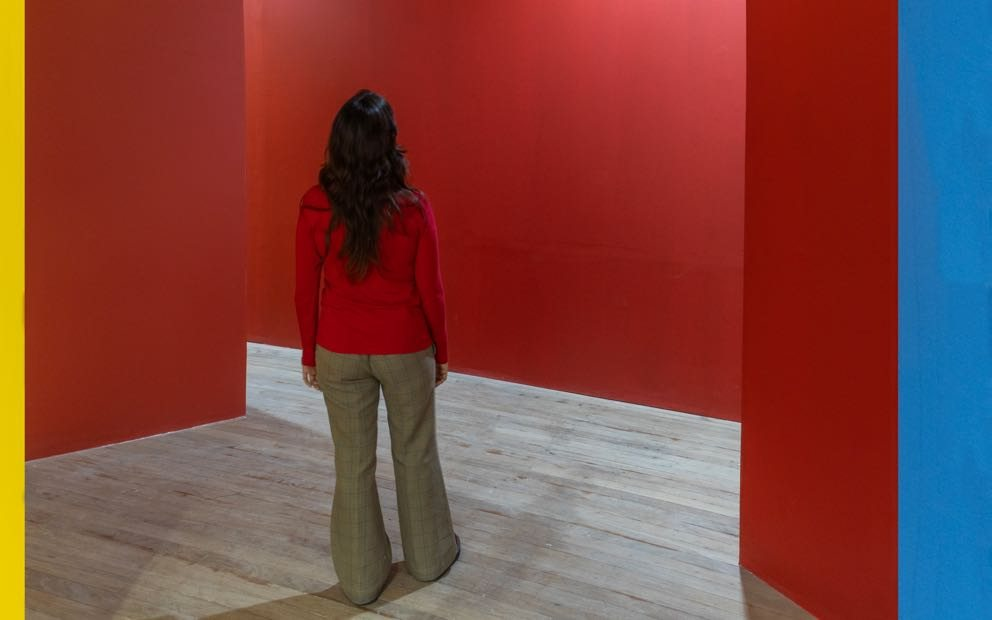
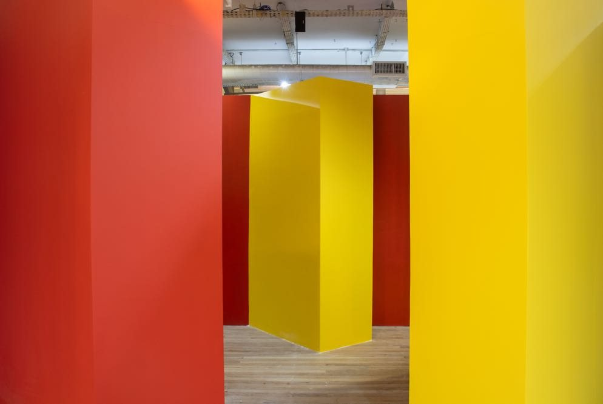
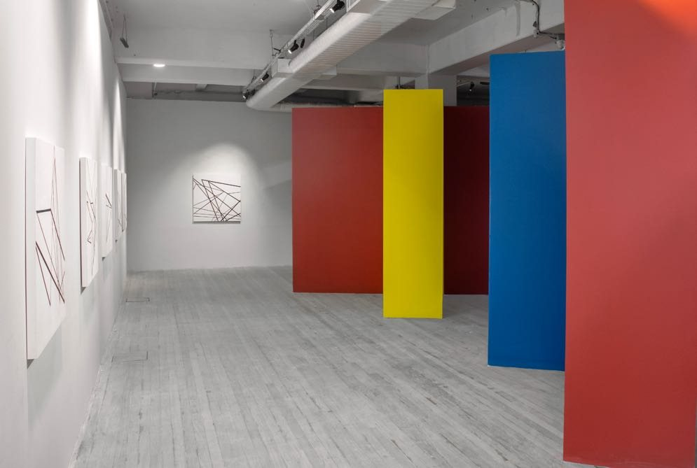
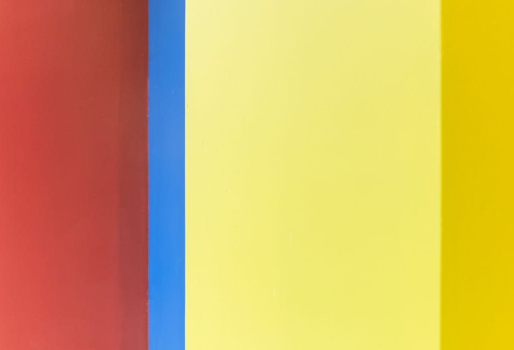

Esquina
Sound recording in preparation.
Installation with painted wooden walls, presence sensors and recordings of engines and traffic, triggered as visitors pass. Shown in the exhibition A Pele do Mundo, Futuros – Arte e Tecnologia, Rio de Janeiro, 2023.
- Materials
- Wood, acrylic paint, audio, presence sensors
- Dimensions
- Variable dimensions
- Venue
- Futuros – Arte e Tecnologia, Rio de Janeiro
- Exhibition
- A Pele do Mundo (2023)
- Curated by
- Michael Asbury
- Photos
- Pedro Tressi



